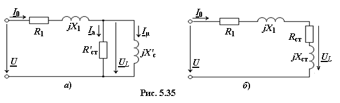
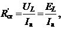
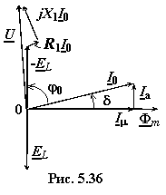

5.4.3.1. Схема замещения и векторная диаграмма катушки со сталью>
Максимальное значение магнитной индукции Вm в электромагнитных устройствах редко превышает 1,3…1,45 Тл и насыщение магнитной системы в них незначительное. При этом заменяют в действительности несинусоидальный ток эквивалентным синусоидальным током i0, опережающим по фазе магнитный поток Ф на угол δ (см. рис. 5.33), и разлагают его на две составляющие: намагничивающую iµ, совпадающую по фазе с магнитным потоком Ф, и активную ia, совпадающую по фазе с напряжением uL. Это позволяет вести расчёт цепи комплексным методом.
|  |
В схему замещения катушки со сталью (рис. 5.35а) обычно включают: активное сопротивление R1 обмотки w, индуктивное сопротивление рассеяния
jХ1 = Ep / I0, обусловленное потоком рассеяния Фр; активный элемент (по которому протекает ток Ia ≈ ΔPст / UL) с сопротивлением R'ст, соответствующий потерям в стали, и индуктивный элемент (по которому протекает намагничивающий ток Iµ) с сопротивлением X'ст, обусловленный основным магнитным потоком Ф. Последние два элемента включают между собой параллельно (рис. 5.35а) или последовательно (рис. 5.35б). Они образуют так называемую цепь (или ветвь) намагничивания, параметры которой определяют из выражений (для схемы рис. 5.35а):
I0 = Ia + Iµ, ,

где
Параметры Rст и Xст ветви намагничивания для схемы рис. 5.35б могут быть определены путём перерасчёта параметров R'ст и X'ст схемы рис. 5.36a или по формулам:

,
Векторная диаграмма (ВД) для схемы рис. 5.35а предcтавлена на рис. 5.36. Угол δ между вектором тока I0 и вектором основного магнитного потока Фm называют углом магнитных потерь. При этом ток Ia ≈ 0,1I0. Вектор , а вектор .
Векторная диаграмма для схемы рис. 5.35б принципиально не отличается от построенной ВД. Для схемы рис. 5,35б , а вектор тока I0 отстаёт по фазе от вектора U на угол φ0 < 90°.
Обычно напряжения R1I0 и jX1I0 составляют 3…8 % от напряжения U, поэтому в первом приближении можно считать, что напряжение UL = −EL = U − R1I0 − jX1I0 ≈ U. Ток I0 и его составляющие Iа и Iµ находят из опытов или аналитически, а также с помощью графических построений.